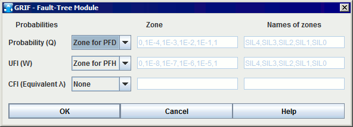
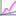

User Manual
Copyright © 2013 Total
Abstract
This document is the user manual of Fault Tree module of GRIF 2013
Table of Contents
The main window is divided into several parts:
Title bar: The title bar shows the names of the module and file being edited.
Menu bar: The menu bar gives access to all the application's functions.
Icon bar (shortcuts): The shortcut bar is an icon bar (horizontal) which gives faster access to the most common functions.
Tool bar: The tool bar (vertical) allows you to select the elements for modeling.
Input zone: A maximum amount of space has been left for the graphical input zone for creating the model.
Tree: A tree is "hiden" between input zone and tool bar. It enables to walk through pages and groups of the document.
Set of tables: Tables are gathered in "hiden" tabs on the right.

The File menu contains the standard commands used in this type of menu (open, close, save, print, etc.). The properties (name, creation date, created by, description, version) can be accessed and modified by selecting Document properties. The Document statistics provide information on the model's complexity. It is also possible to access a certain number (configurable) of recently modified files.
The icon bar just under the menus proposes shortcuts for most of the File commands:

The Edit menu contains all the commands needed to edit the model being input graphically.
The icon bar just under the menus proposes shortcuts for most of the Edit commands:

The Tools menu contains all the commands needed to manage the current model (page management, alignments, options, etc.).
The icon bar just under the menus proposes shortcuts for most of the Tools commands:

The Document menu gives access to all the documents being created or modified.

The Fault Tree menu contains all the commands needed to produce the graphical part of the current model.
The vertical icon bar on the left of the application provides shortcuts for each of the Fault Tree commands (cf. vertical tool bar).

The Data and Computations menu is divided into two parts: data management (creation and management of the different parameters) and configuration/computation launch (computation time, desired computation, etc.)..

NB: The Verify function detects any errors in the model: data without values (equal to NaN), events having the same name, etc.
The Group menu concerns the input and management of submodels grouped into independent subassemblies.
The icon bar just under the menus proposes shortcuts for two of the Group commands:

Finally, the Help menu accesses the on-line Help, the Help topics and to "About".
Each operating safety model has its own icons. All the graphical symbols for the fault trees are shown on the vertical icon bar on the left of the data input screen.

The vertical toolbar contains the following items:
Select selects the desired elements.
"AND" gate to add a logic gate of the type "AND" (represented by a flat-based geometrical figure).
"Or" gate to add a logic gate of the type "OR" (represented by a curved-based geometrical figure).
"K out of N" to add a logic gate of the type "K out of N" (represented by a geometrical figure with a double flat base).
"Comment" gate to insert a block (represented by a rectangle) containing only comments in the model.
Elementary event represented by a diamond shape.
Basic event represented by a circle.
To be developed event represented by two diamond shapes, one inside the other.
Home" event represented by a shape vaguely resembling a house.
Negation represented by a small circle.
Link (one only) to create one connection (and only one) between an input (gate) and an output (gate or event).
Links (many) to create connections between the inputs (gates) and the outputs (gates and events).
Identical transfer gate represented by a triangle.
Repeated event represented by a circle.
Comment to add text directly to the graphic.
Dynamic display to display the value of a model element.
Charts to draw charts representing computations on the model.
To create or modify data (parameters, variables, etc.), tables are available in the Data and Computations menu and in tabs at the right of the view. All the GRIF 2013 data tables operate in the same manner.

The data editing table/panel is divided into 3 parts:
The top part containing the buttons.
The main part containing the data table.
The bottom part indicating what the selected data is used for.
 | Saves the table in a text file. |
 | Opens the table in a text editor (that defined in the Options). |
 | Opens the column manager. |
 | When the button is pressed, a click in the table leads to the selection in the input area. |
 | Displays the data filtering part. |
 | Multiple modifications made to all the selected data. |
 | Creates new data. |
 | Duplicate the selected data (ask a new name) |
 | Deletes the selected data (one or many). |
 | Enables data filtering or not. |
 | Defines the filter to be applied to the data. |
Filtering allows you to display only what is necessary in a table. Several filtering criteria can be combined, as shown below:

Select or to choose the type of association between each line (filter criterion). A line is a Boolean expression divided into 3 parts:
the first is the column on which the filter is used;
the second is the comparator;
the third is the value to which the data will be compared.
If the Boolean expression is true, the data will be kept (displayed); otherwise the data will be masked. When the filter is enabled its value is displayed between < and >.
The data in a column can be sorted by double clicking the header of this column. The first double click will sort the data in ascending order (small triangle pointing upwards). The second double click on the same header will sort the column in descending order (small triangle pointing downwards).
A table can contain many columns, some columns may be unnecessary in certain cases. The "linked to database" column is unnecessary when no database is available. It is thus possible to choose the columns to be displayed and their order. To do this, click right on a table header, or click the button, the following window opens:

You can choose the columns to be displayed by selecting (or deselecting) the corresponding check boxes. The arrows on the right are used to move the columns up or down in the list to choose the order of the columns. The Disable data sorting check box disables the data sorting. This improves the application's performance with very complex models.
To modify data, double click the box to be modified. When several lines are selected (using the CTRL or SHIFT keys) changes can be made to all the selected data by using . A window then opens to allow you to make these changes.

The bottom table in the data table indicates which elements in the model use the selected data. The first column of this table gives the name of these elements; the second indicates their location in the document (page, group). Clicking on a line in this bottom table opens the page where the element is located and selects the element.
As mentioned above, the tables can be accessed via the Data and Computations menu; in this case, each table is displayed in a separate window.
To avoid having too many windows open, all the tables are grouped together in tabs on the right-hand side of the application. This area can be hidden/displayed using the small arrows above the input zone.


You can expand or collapse a node in a recursive way with a right click on the node.
As explained for tables on the right, you can "hide" the tree.
To enter the different Gates, select the corresponding symbol on the vertical toolbar. A new element is then created whenever you click right on the graphical entry area. Each of the model's gates has five parameters:
A number: These numbers are, with the type, the gates' true identifiers (those which will be used by the computation engine). That is why, when you wish to change the numbers of certain gates, you must remember that two gates cannot have an identical number. They are automatically incremented as new elements are created.
A name: It is a parameter which is defined automatically and which cannot be modified by the user. The name of each gate consists of its "type" followed by its "number" (e.g.: "And1" or "KofN3").
A "K out of N" integer: This field is only accessible in the case of K out of N gates. It allows you to choose the value of K (K equals 1 by default).
A comment: This field adds text inside the gate. This function makes the model more legible (by giving the specific features of these elements).
A type: When a gate has been created, its type can be modified to one of the five types available in the drop-down list.

To enter the model's Events, select the corresponding symbol on the vertical toolbar. A new element is then created whenever you click left on the graphical entry area. Each of the model's events has five parameters:
A number: These numbers are, with the type, the events' true identifiers (those used by the computation engine). That is why, when you wish to modify the numbers of certain events, you must remember that two events cannot have an identical number. They are automatically incremented as new elements are created.
A name: The default name assigned to the events is Evti for the "i" the element created. You are recommended to replace this name by something more mnemonic to increase the model's legibility.
A comment: This field adds text inside the event. This function increases the model's legibility (by giving the specific features of these elements).
A law: This element is used to model the event's random aspect. You can choose from many laws which must then be configured (cf. detailed description of the laws later on in this document).
A type: When an event has been created, its type can be modified from the four types available in the drop-down list.

For each gate or event, you can set it initiator (with a right clik). This attribut must be seen from an "Event-Tree" point of view. In an event-tree an initiator is an event that must happen befo barriers set the system in a safe mode. In order to have a Top-event, iniator event must happen after barriers failure. Setting initiator attribut on and event means that it must appear after the "non-initiator" events. This setting has an impact on UFI computation only. There is no impact on Probability of Equivalent lambda.
When the gates and events have been created, they must be interconnected to establish the tree's logic. There are two possible types of connections: "gate -> gate" and "gate -> event" connections. To make a connection, proceed as follows:
Click the corresponding icon on the vertical toolbar.
Select the start gate by a click left on the specific zone (a dot for "AND" gates, a cross for "OR" gates, etc.) and keep the button pressed.
Move the mouse to the element to be connected.
Release the mouse button.

NB: The above icon only allows a single link to be created at a time. If you wish to create several links in succession without having to reselect the link creation icon each time, use the icon shown below: .

It is a very specific gate which inverts the logic of the subtree which is downstream of it.
To insert a "Negation" in a tree, proceed as follows:
change the type of an existing gate by using the drop down list;
OR create a new a new gate with the type "Negation":
Click left on the corresponding icon on the vertical toolbar.
A new element will then be created whenever you click left on the graphical entry area.
You then just have to configure and connect the "Negation" like a conventional gate: link the top part (above the circle) to the bottom part of a gate and link the bottom part (below the circle) to the top part of an event or gate.

To add a comment anywhere on the chart, click the pencil icon and place yourself on a point in the graphical input zone. The Comment dialogue box opens where you can enter the desired comment.
Note: Character "%" is a reserved character, it must be type twice "%%" in order to display "%".

It may be useful to observe the change in the different parameters of the model. It is also usefull to see a result next to its corresponding system. To do this, use dynamic fields by selecting the corresponding icon on the vertical tool bar:

The dynamic fields are a type of "improved comments". They can be used not only to enter words or phrases but also to insert model values or results.

If you want to display informations about a data of the model, you must use the following syntax:
$data.'type of data'.'field used o search data'('value that the field must match).'information you want to display for the selected data'
We can analyze the above windows as follows: I am looking for a "parameter" which "name" is 'lambda", and I want to display its "value". When you type the first letters, a completion system helps to type script without error.
If you want to display a result of the result-bank, the syntax is the following:
$result.bank('path in the bank').target('target result').'what you want to display'.'at what time'
We can analyze the next picture as follows: I am looking for a result which path in the bank is "default-Moca", I want results for "TS3 for 'available' valriable" and I want its value for the "last" time. If last is replaced by time(10) we obtain value at t=10.

You can also display a summary of result. Replace 'what you want to display' by summary. In this case, summary is the last word of this script.
A button has been added in 2013 version, it is a script generator for model data.
All the graphical elements can normally be edited with a double-click on them or using the Edit - Properties menu, or using the shortcut Alt + Enter.
When you click right on a gate, you can modify any parameter (except the name):

change the number;
specify the value of K if the gate is a "K out of N" type;
read and/or modify the comment part;
modify the type of gate to one of the five types available in the drop-down list:
"OR" gate: an "OR" type logic gate is applied to the elements connected downstream.
"AND" gate: an "AND" type logic is applied to the elements connected downstream.
"K of N": a "K of N" type logic is applied to the elements connected upstream.
"Comment" gate: this gate has no effect from the logic viewpoint and is only used to comment on the branch where it is located.
"NOT" gate: cf. above.

When you click right on a gate, you can modify any parameter (except the name):

to change the number;
to enter the event name;
to read and/or modify the comment part;
to read and/or modify the law governing the event.
to modify the type to one of the four available types in the drop-down list:
Elementary event;
Basic event;
To be developed event;
"Home" event.

The names of these events simply have a "graphical" impact on the tree structure. There is no impact on the logic function which will be generated to perform the computations. The aim is simply to simplify re(reading) the fault tree
The law part is configured in several steps:
Choose the law from the twenty-three available in the drop-down list.
Configure the law (a drop-down list of the module's parameters is available for each field to be filled in).

Uncertainty computations can be introduced for each of the parameters, with a choice of the law and of the corresponding parameters (cf. later on in this document: a detailed description of the uncertainty computations on the parameters).

The concept of a shortcut (or repeated element) was introduced in the Fault Tree module for four main reasons:
To link together portions of the model;
To avoid graphicaly complex model, and keep readability;
To simplify the use of the Group function (cf. below);
To highlight what is essential and what is not.
Let a fault tree contain three base events, one "OR" gate (critical event) and one "AND" gate.

The aim here is to create a shortcut to the gate (identical trasfert gate) called "And2" to be able to dissociate the "And2" subtree from the main tree. Proceed as follows:
Delete the existing link between gate "Or1" and gate "And2".
Click left on the of tool-bar then click on "And2" Gate.

Connect the shortcut created in this manner to gate "Or1".

The name of the original gate and the page number where the original gate is located are shown beside the shortcut to gate "And2".
Although linked from the "computational logic" viewpoint, the two trees are now totally graphically independent. They can now be placed on different pages or in different groups (cf. later on in this document).
From the logic viewpoint an event can have an "impact" on several "branches" of the same tree. To correctly model this case, this event must be duplicated. To do this, select the corresponding icon on the vertical toolbar, then click the event to be duplicated:

The repeated event must now be inserted in the model, given that at each instant its state will be equal to that of the original event.
NB: Obviously, if the original event is deleted then the duplicated event is also deleted.
The use of shortcuts allowed us to obtain two Fault Tree which have no graphical link between them. They communicate only by shortcuts. This can be used, for example, to place each subpart on a different page:
Create a new page by clicking the corresponding icon in the icon bar (or use menu Tools - New Page). A page number 2 is thus created.
Return to page 1 by selecting the page using the page selector in the ideographic command bar (or use menu Tools - Page manager).
Select the part to be moved.
Open menu Tools - Change page.
Select page 2 and click . The part selected is transferred to page 2 but it continues to communicate with page 1 via the shortcuts.
Note: For large models the division method described above is very useful.
Another possibility for entering large Fault Tree is to use the Group concept. This is made possible by the shortcuts and the fact that the data is global for a document. This allows quite separate subparts to be created:
Select a subpart.
Use menu Group - Group. A dialogue box then opens asking for the name to be given to the group being created.
Enter the desired name and click (e.g.: "System 1"). The group is created: the subnet is replaced by a rectangle assigned with the chosen name.


Each group can then be edited, renamed or ungrouped using the commands in the Group menu. The group can also be edited with a click right or using the "cursor down arrow" on the left of the page manager. In Edit mode, the submodel can then be modified as you wish. When the modification is terminated you return to the previous figure by exiting group editing by menu Group - Quit Group Edition, or using the "cursor up arrow" on the left of the page manager. It's also possible to choose a picture for a group by using Group - Change Picture menu.
Note: Groups can be grouped recursively.
To simplify model creation the Fault Tree module has different data entry aids to automate time-consuming operations.
To assist with the entry of the repeated parts of the Fault Tree "Copy / Paste and Renumber" mechanisms have been provided. This operation is carried out in 6 steps:
Select the part to be copied.
Click the icon, or use menu Edit - Copy or the shortcut Ctrl + C.
Click the icon, or use menu Edit - Paste and Renumber or the shortcut Ctrl + R.
A window appears where you choose the start number for the renumbering.
The previously selected part is copied and the copy is selected.
Move the copy to the desired location.
We then obtain the tree shown in the figure below:
Or1 and And2 gates from original tree are become Or3 and And4 for the copy;
Evt1, Evt2 and Evt3 events from original tree are become Evt4, Evt5 and Evt6 for the copy.

When copying to a new document, any data conflicts are handled in the following window:

Use data of destination document, this will replace the occurrences of the data in the source document by the data with the same name in the destination document.
Create a copy for each data in conflict, this will replace the occurrences of the data in the source document by a copy with a name with the suffix "copy".
Manually manage conflict, this allows you to choose whether you use the existing data or not, depending on the data. You can also specify the name of the copy by double clicking on the box in the "destination document" column. The names in this column are normally masked when the Use existing check box is selected, since it is the data which is already in the destination document which will be used.
The "Copy / Paste and Renumber" command creates new "instances" i.e. new subtree similar to the subtree copied:
Same graphical structure;
Same parameters;
The number and name of the events and gates change (new name: Evti for events and "type of gate"i for the gates, where i is the new number).
Same comments.
When identical transfer gates are part of the selection to be Copied / Pasted and Renumbered, they will then remain unchanged for the copy. They shall always point to the same gate if this gate is not part included in the selection to be copied.

In the above example, gate Or1 an event Evt1 have been renumbered normally. The shortcut to gate And2 has not been modified.
When a gate that part of a shortcut is also part of a selection hat is going to be "Copied /Pasted and Renumbered" and if the shortcut itself is not present, then the gate will be renumbered in the conventional manner.

In the above example, all of the events and gates have been renumbered normally.
When identical transfer gate (and their corresponding original gate) are included in the selection to be "Copied / Pasted and Renumbered", then new shortcuts will be created and they will be linked to the new gates.

In the above example, the gate that is linked to a shortcut has been renumbered (And2 -> And4) and so its shortcut has also been modified.
You can navigate between an element's different shortcuts, using menu Tools/Navigate to shortcuts. A window opens and displays the list of shortcuts. Clicking on a shortcut automatically positions the view on this shortcut. You can return to the original element by clicking on its name at the top of the window.
In addition to the "Copy / Paste and Renumber" command there is an ordinary "Copy / Paste" function. It is used to make a single copy without renumbering. We thus obtain double elements which, from a formal viewpoint, is incorrect but which must be temporarily tolerated to simplify data entry.
Where possible, the "Copy / Paste and Renumber" function must be used in preference to the simple "Copy / Paste" function to minimise the risk of errors. But when it is used you must take the necessary precautions to re-establish the correct numbering to eliminate the duplicates.
When creating the Fault Tree it may be necessary to change a large part of the elements in the models: changing the names, numbers, etc. The "Replace all" function in the Edit menu allows you to perform overall changes:
Use the Edit / Overall changes function.
Choose the type of elements to be modified among available tabs.
The "Find / Replace" part changes a character string present in one or more variable labels, place labels or transition labels. It is replaced by the string entered in the "Replace" part.
The "Renumber" part only concerns the places. It is used to change place numbers. You indicate a Start number then specify a constant Step, or Add a constant value to the current numbers.
Click to return to the chart. The changes are validated.
Note: The name changes and renumbering can be done manually if the necessary precautions are taken (avoiding duplicates, etc.). You click the Future number or Future name column and enter the change. Do not forget to validate it with the "ENTER" key.

The "Replace selection" function is equivalent to a "Replace all" but only applied to the selected elements. Only the selected gates and events can be replaced.
NB: The "Replace selection" function does not allow the model's parameters to be replaced.
File - Doucument properties menu enable to save information about document : name, version, comment, ... These informations are available in General tab.

Images may be very useful to represent sub-system. GRIF 2013 enables to save images that can be used in different parts of software (groupes, prototypes, ...). Images management is made in Images tab.

 icon.
A double click in File column enables to select an picture (jpg, gif or png).
A double click in Description column enables to give a name or a
description to selected image.
icon.
A double click in File column enables to select an picture (jpg, gif or png).
A double click in Description column enables to give a name or a
description to selected image.
Once in document, picture can be linked to a groupe with Group - Picture change menu.
Images are saved indide document, pay attention to picture size. Because images are inside document, you have to re-add picture if picture is modified erternaly.
To improve the legibility of the model the selected elements can be aligned vertically or horizontally. To do this, use the Align command in the Tools menu.
The following figure shows how the command works. For example, to align selected places and transitions vertically, proceed as follows:
Select the elements (places, transitions, comments, etc.) to be aligned;
Go into the Tools menu and select the Align function;
Choose the type of alignment: Align center;
Click left on the mouse.

Similarly, to align elements horizontally select the type Align middle which aligns the ordinates while keeping the abscissa constant. The principle is the same as that described above.
It may sometimes be useful to select several elements located in the four corners of the input zone. To simplify this type of selection click on each of the desired elements one by one while holding down the Shift key on the keyboard.
It is sometimes difficult to select an additional part of a model. To simplify the selection process, select a graphical element then use menu Select connex part in the Edit menu. The additional part can be selected directly by clicking on the element while keeping the Control button pressed.
When creating a model, if the page size is not big enough, it can be changed using the menus : Increase page size (Control+Keypad +), Reduce page size (Control+Keypad -), Page size (Control+Keypad /) under the Tools menu.
The Page size menu allows the user to edit the page dimensions directly.

Page zooms can be modified either by using the toolbar menu:

The padlock on the toolbar is used to apply the zoom to the current page or to all pages in the document.
 | The zoom applies to all pages in the document. |
 | The zoom is applied only to the current page. |
Note that if an element is selected on the page, the zoom will centre the page on that element.
To be able to create an ordered and legible model quickly, the cross hair can be used to align the different elements with each other (but less accurately than the Align function in the Tools menu). The cross hair is enabled (or disabled) in the Graphics tab of the Option menu.
The following picture show how to quickly align two element of the model.

In order to align horizontally, select Align au middle which align keeping constant abscissa.
When objects are where you want, you can glue a set of object by right-clicking and selecting Glue. This command create a group (a graphical one, not a hierarchical one) with selected objects, so that moving one moves the others.
To be able to draw a line, polyline or arrow, the Line can be used. Draw the line and edit properties of line to make an arrow.

Data may not be used anymore, it can be used usefull to delete every unused data. To facilitate removal, use Data and Computations / Unused data deletion menu.

To facilitate the creation of model, the Fault Tree module allows the creation of CCF(Common Cause Failure), and to link a logical entity(Event, Block) to one or more common cause failures. CCF are available in the data table. There is no graphical entity associated with CCF. The logical entity associated with an active CCF are graphically marked by a yellow flash :

The creation of a new CCF is possible in different ways :
click button on table data,
Use the contextual menu on logical entities : CCF - Add new CCF

You can edit the properties of a CCF in different ways :
Double-Click on a cell of the CCF table, and edit.
Use the contextual menu on a table raw and click on Property action
A configuration window opens :

Two types of laws are now possible for a CCF:
The beta-total law : Beta parameter is applied to the laws of concerned components. Singularities :
A component can be concerned by several CCF using beta-total law.
The sum of the beta set on the CCF must be strictly less than 1 for a component.
The supported laws for a component are exponential, constant and test-periodic.
The beta-nuclear law : The laws of the components are replaced by the law defined by the CCF. Singularities :
A component must be linked to only one CCF using beta-nuclear law.
Laws of components are no longer used.
The supported laws for CCF are exponential, constant and periodic-test.
A total of twenty-three laws are available in the Fault Tree module. Each of these laws has one or more corresponding parameters. Here is a list of the different "types" possible:
Probability: value between 0 and 1 inclusive.
Rate: value greater than or equal to corresponding to a failure rate.
Duration: value greater than or equal to 0 corresponding to a duration or to a time.
Factor: value strictly greater than 0.
NatInt: integer value greater than or equal to 0.
Boolean: can take a value of 0 or 1 corresponding to an option parameter.
Other: any value.
In the remainder of this chapter, the parameter "types" will be specified for each law.
This law has two parameters: the probability q and the inconditional failure rate w of the event. Whatever the time, the probability of the component failing is constant.
Parameter:
q (Probability)
w (Inconditional failure rate)
The law is defined as follows:

This law generally corresponds to the case where the only failure considered for the components is that of a refusal to change state (e.g.: Fails to start/stop, etc.).
This law only has a one parameter: the component's failure rate (supposed to be constant over time). It describes the time interval before the first failure for a non-repairable component.
Parameters:
Lambda (Rate) = failure rate
The law is defined as follows:

This law is widely used since it is almost the only one to make it possible to obtain analytical results. In addition, it describes the lifetime of a non-repairable component very well (at least when there are a large number of components) when the component is no longer young.
This law describes the behaviour of a component (repairable or not), with (or without) failure to start, using exponential expressions. It generalises the exponential law with the Lambda parameter (failure rate).
Parameters:
Gamma (Probability) = probability of initial start failure (at t = 0)
Lambda (Rate) = failure rate
Mu (Rate) = repair rate
The law is defined as follows:

The Gamma and Mu parameters are optional. Depending on the case, they can be zero.
If the component is not repairable, set Mu to zero.
If the component cannot fail to start, set Gamma to zero.
NB: The failure to start is only taken into account at t = 0.
This law has three parameters: alpha, beta and t0. It describes the behaviour of a component which is not repairable and which does not fail to start. Its specific feature is that it takes account of the component's young and old periods.
Parameters:
Alpha (Factor) = scale parameter
Beta Factor) = form parameter
T0 (Time) = location parameter
The law is defined as follows:

The significance of this law is that new distributions can be tested by varying the beta factor:
If Beta is less than 1, the failure rate decreases and the law then allows the period when the component is young to be taken into account.
If Beta is greater than 1, the failure rate increases and the law then allows the component's ageing period to be taken into account.
If Beta is equal to 1, the Weibull law is equivalent to the exponential law.
This law allows a component which fails to be represented according to an exponential distribution law and whose failure is found during a periodic test. The repair is then carried out instantaneously.
Parameters:
Lambda (Rate) = failure rate
Tau (Duration) = test period (time interval between two consecutive tests)
T0 (Time) = date of first test
The law is defined as follows:

Here is a small graph representing the different phases of the component's "life":

NB: This law is a simplified version of the "TPC / Full Periodic Test" law.
This law allows a component which fails to be represented according to an exponential distribution law and whose failure is found during a periodic test. The repair phase is then modelled by an exponential of the Mu parameter.
Parameters:
Lambda (Rate) = failure rate
Mu (Rate) = repair rate (when the failure has been found during a test)
Tau (Duration) = test period (time interval between two consecutive tests)
T0 (Time) = date of first test
Here is a small graph representing the different phases of the component's "life":

NB: This law is a simplified version of the "TPC / Full Periodic Test" law.
This law allows a periodically tested component to be represented as completely as possible. There are many parameters in play.
Parameters:
Lambda (Rate) = failure rate during operation or on standby
Lambda* (Rate) = failure rate during the test
Mu (Rate) = repair rate (once the test has shown up the failure)
Tau (Duration) = test period (time interval between two consecutive tests)
Teta (Time) = date of first test (ignore parameter value: Tau)
Gamma (Probability) = probability of failure due to starting the test (ignore parameter value: 0 = starting the test does not cause a failure)
Pi (Duration) = duration of test (ignore parameter value: 0 (instantaneous test))
X = (Boolean) indicator of component availability during the test (0 = component unavailable during the test; 1 = component available) (ignore parameter value: 1 = available during the test)
Sigma (Probability) = test cover rate (probability that the component failure is detected during the test) (ignore parameter value: 1 = the test covers all the possible failures)
Omega 1 ((Probability) = probability of forgetting to reconfigure after the test (ignore parameter value: 0 = no reconfiguration problem)
Omega 2 ((Probability) = probability of forgetting to reconfigure after the repairing (ignore parameter value: 0 = no reconfiguration problem)
NB : the "ignore parameter value" is the value to type if you want parameter to do not affect component availability.
Here is a small graph representing the different phases of the component's "life":

This law takes two parameters: a repair rate Mu and a delay Delay. For non repairable components, it gives the probability of not succeeding to recover the component before a delay Delay.
NB: This law does not depend on the time, it is a short version of a constant law.
Parameters:
Mu (Rate) = repair rate
d (Duration) = recovery time
The law is defined as follows:

This law is a variation of the "IND / Unavailability" law. It corresponds to the probability of a "IND / Unavailability" law computed at t = infinity.
NB: This law does not depend on the time, it is a short version of a constant law.
Parameters:
Lambda (Rate) = failure rate
Mu (Rate) = repair rate
The law is defined as follows:

This law has three parameters: a failure rate, a mean repair time and a delay. In addition, it does not depend on the time.
Parameters:
Lambda (Rate) = failure rate
MTTR (Duration) = average repair time
d (Duration) = delay
The law is defined as follows:

This law is a simplified case of the "IND / Unavailability" law. It corresponds to an exponential law with a fixed time given as parameter.
Note1: This law does not depend on the time, it is a short version of a constant law.
Note2: The parameter Q is optional.
Parameters:
Lambda (Rate) = failure rate
T (Duration) = mission time
Q (Probability) = optional law
The law is defined as follows:

This not actually en law, you must enter probability and failure rate in a tableau according to the time.
NB: If you ask for computation a times that are not in the table, the value will be interpolated according to other points.
This law uses a Markov graph as definition. Select the path of the .jma file. In order to do Boolean computation, you need to do a preprocessing of the law. The preprocessing automatically start Markov module and retrieve necessary values. It can be done with a right-click on the object having the law, or in Data and computations menu.
This law has two parameters: and upper limit and a lower limit.
Parameters:
a = upper limit
b = lower limit
The law is defined as follows:

This law has two parameters: the mean and the standard deviation.
Parameters:
Mu = mean
Sigma = standard deviation
The law is defined as follows:


For each probability law used in the model, it is possible to introduce an uncertainty on each of the parameters. There are three laws available to model them:
"NLOG / Lognormal" law;
"UNIF / Uniform" law;
"NORM / Normal" law.
NB: Each of these laws is described in the previous subchapter.
Using this method, it is thus possible to introduce the impact of the uncertainties on the data into the final result.
Here is a fault tree modeling the behaviour of any safety system with two possible states: "work" / "failed" (or "available" / "unavailable"). The aim is thus to construct a tree allowing us to evaluate the system's mean unavailability.


The above tree has nine events:
LS
Number: 1
Comment: "Logic"
Law: exponential law with "Lambda" = Lambda1.
SV1
Number: 2
Comment: "Valve 1"
Law: simple periodic test law with "Lambda" = Lambda2, "Tau" = Test and "T0" = 0.
SV2
Number: 3
Comment: "Valve 2"
Law: simple periodic test law with "Lambda" = Lambda2, "Tau" = Test and "T0" = 10.
S1
Number: 4
Comment: "Sensor 1"
Law: unavailability with "Gamma" = Gamma, "Lambda" = Lambda1 and "Mu" = Mu2.
S2
Number: 5
Comment: "Sensor 2"
Law: unavailability with "Gamma" = Gamma, "Lambda" = Lambda1 and "Mu" = Mu2.
S3
Number: 6
Comment: "Sensor 3"
Law: unavailability with "Gamma" = Gamma, "Lambda" = Lambda1 and "Mu" = Mu2.
R
Number: 7
Comment: "Relay"
Law: unavailability with "Gamma" = 0, "Lambda" = 10e-4 and "Mu" = Mu1.
SS_1
Number: 8
Comment: "Sub-system 1"
Law: full periodic test law with "Lambda" = Lambda1, "Lambda*" = Lambda1, "Mu" = Mu1, "Tau" = 4380, "Teta" = 4380, "Gamma" = 0, "Pi" = 10, "X" = 0, "Sigma" = 1 and "Omega" = 0.
SS_2
Number: 9
Comment: "Sub-system 2"
Law: full periodic test law with "Lambda" = Lambda1, "Lambda*" = Lambda1, "Mu" = Mu1, "Tau" = 4380, "Teta" = 10, "Gamma" = 0, "Pi" = 10, "X" = 0, "Sigma" = 1 and "Omega" = 0.
The tree's logic is governed by four gates:
Div1
Number: 1
Name: Or1
Comment: "ER"
Type: "OR"
Div1
Number: 2
Name: And2
Comment: "VALVES"
Type: "AND"
Div1
Number: 3
Name: KofN3
Comment: "SENSORS"
Type: "K out of N"
Div1
Number: 4
Name: Or4
Comment: "Sub-systems"
Type: "OR"
In this example, different types of more or less simple laws have been used. It was produced in a short time and allowed several more or less complex components to be modelled: non repairable, repairable, periodically-tested, with probability of failure on demand, etc.
Using this tree, we can now run various computations on the different gates or events: unavailability computations, unreliability computations, etc.
For printing, you have several commands at your disposal in the File menu File:
The Page setup function function allows you to choose the page orientation, the size of the margins, etc.

The Print function allows you to export .pdf document pages. Graphics are exports in a vectorial format in order to scale its whithout deterioration.

The print window appears and user can selected pages to print and configuration.
Print whole document : Allows to print whole document.
Print current page :Allows to print the current page.
Print select : Allows to print the selected pages. The Print partially selected pages allows you to print pages marked by a blue square.
Print border : Print a border on each page.
Print filename : Print the filename on the top left corner of each page.
Print page number : Print the page name and number on the bottom of each page.
Print date : Print the date on the top right corner of each page.
The Save in RTF file... function initially gives access to a window called Printing properties. Then to another called Information. And thirdly, a window is displayed allowing you to choose the folder in which the RTF file is to be saved.

When you select the Save in RTF file function, the first box to appear is that shown above. You can then select your preference: Print border, Print filename, Print page number and/or Print date.

Secondly, an Information window appears. It allows you to indicate whether you wish to print the current view, print the current page or print the whole document.
The following two computation engines can be used in the Fault Tree module:
Albizia;
MOCA.
The computations by Albizia are performed in two main steps:
general configuration of compuation;
reading the results in the bank of results.
The computation configuration window can be accessed in two different ways: either via Data and Computations - Computation settings menu or via Data and Computations - Launch Computation menu. The difference between both is that, in the second case, the configuration step is directly followed by the computation launch step.
The configuration window which opens is called Lauching Albizia computation.
The configuration window is divided into 3 tabs (1 for each type ofcomputation).

Target: specifies the target of the computations. Two choices are possible : Top for the top(s) of the tree and Selected node for the node currently selected in the tree.
Computation times: specifies the computation options.
Iterate From A to B step C: the computations will be performed for values of t ranging from A to B with a step of C.
List of times: the computations will be performed for the values of t given in this list.
Display discontinuity points: the computation engine takes into account the discontinuity points if the option is selected.
Times in: The values entered are supposed to be hours. The unit can be specify among hours, days, months, years
Compute mean value through [0, t]: the computation engine computes the mean value of each variable to compute for each computation times.
Compute integral value through [0, t]: the computation engine computes the integral of each variable to compute for each computation times.
Activate propagation of uncertainty: activate the propagtion of uncertainties, and specifies parameters of computation and wanted results.
Number of histories : Number of histories (Monte-Carlo simulation) that have to be made.
Confidence range at : specifies the percentage of resultats that will be included in the confidence range.
Quantiles chosen : With all results of histoires, the software do a "quantile computation". But there are always many ways to chose bounds of an interval containing X % of the results. Here you can chose "on the left" (lower bound is minimum, upper bound is the quantile at X%), "onthe right" (lower bound is the quantile at 100-X%, upper bound is the maximum) and in the middle.
Probabilities: specifies probabilities to compute.
Unavailability: Q(t), U(t) or PFD(t) according to different standards and countries.
Availability: A(t) = 1 - U(t)
Unconditional Failure Intensity: W(t), UFI(t) or PFH(t) according to different standards and countries. It is the probability that the system fails between t and t+dt, assuming systeme was OK à time t=0.
Conditional Failure Intensity: CFI(t), λeq(t) or λVesely(t) according to different standards and countries. It is equal to W(t)/A(t) It is the probability that the system fails between t and t+dt, assuming systeme was OK à t and at time t=0.
Unreliability : F(t) = 1 - R(t)
Reliability : R(t) = R(t)=exp[-(Integral from 0 to t) of λeq(u)du]. We can see here that this reliability is based on an equivalent lambda, and not on the real lambda. This is a good approximation that is conservative. Anyway, you can not compute the reliability with a fault-tree. For systems made with unrepairable components, the result is excat (because it is equal to Availability).
Calcul de temps passé dans les zones : Pour les valeurs ci dessus, cette options permet de savoir quel pourcentage du temps elles sont restées dans tel ou tel interval. Ces intervalles sont configurables en cliquant sur le bouton configuration. Ils sont par défaut configurés pour les calcul SIL.

Cible: permet de définir la cible des calculs. Deux choix sont possibles : Sommet pour le(s) sommet(s) de l'arbre et Noeud sélectionné pour le noeud actuellement sélectionné dans l'arbre.
Number of cuts: number of minimal cuts of the system (no maximum order limitation).
Number of cuts per order: summary of the number of cuts for each order (no maximum order limitation).
List of cuts: list of minimal cuts of the system. The maximum order can be set thanks to the Limit order of displayed cuts option.
Limit order of displayed cuts: specifies the maximum order of the displayed cuts. Cuts with order greater than the maximum order are not displayed.
Compute probability of products at t=: specifies which time will be used to compute probabilities of cut sets.

Target, times, uncertinties : cf. probabilities calculation
Computation type: specifies the importance factors to compute.
Birnbaum (MIF)
Critical (CIF)
Fussel-Vesely (DIF)
Risk Achievement Worth (RAW)
Risk Reduction Worth (RRW)
The manual configuration of MIF computation allows you to chose MIF algorithm.
Partial derivative: Uses quick algorithm based on partial derivative. To be used with coherent fault trees only)
Exclusive Cofactor: Uses (less quick) algorithm using Exclusive cofactor S#. It stays valid with non-coherent fault trees.
BDD: Uses algorithm using BDD (only for coherent fault trees)
GRIF (with Albizia engine) enables to compute UFI on non-coherent fault tree. The automatic mode takes into account almost cases, but user can select which algorithm to use. There is two way for UFI computation:
UFI computation with MIF: It is "usual" method. Let be a System S made of many components c, the UFI (also called w) of S is equal to UFIS = wSΣ MIF(S,c)*wc. This algotithme is less performant than the one based on BDD, but it works for non-coherent fault tree (if the MIF is well computed).
UFI computation with BDD: It is the "fastest" methode which is base on BDD. This method doesn't work for non-coherent fault trees, except in the particular case of initiator events (cf option below).
In order to exmplain the Take failure order into account "not-initiator" then "initiator" option, lets take a simple example : un system made of one safety barrier which set the systeme in a safety state if an initator event is detected. The top event is an initator event which is not detected by the barrier. The frequency of this top event is the result of two cases:
The barrier is already out of order (with some probability) and the initiator event happens (with some frequency)
the initiator event is already here (with some probability) and the barriers fails (with some frequency)
When using common cause failure, the software must compute a lambdaCCF that will be used for CCF. It is the one that will be multiplied by Beta. Assuming each component impacted bay a CCF has a different lambda, there are many methods to compute the lambdaCCF from the list of lambdas. Five methods are available :
Minimum: This method uses the minimum value of lambdas. Not recommanded.
Maximum: Uses the maximum value of lambdas to be concervativ. This method was used in GRIF 2013 and previous version. It can be penalizing when lambda of components are very different.
Average: This method uses the artimetic mean of lambdas.
Geometric mean (PDS Method): This method uses the geometric mean of lambdas. It is PDS Method recommanded by SINTEF. It works fine with very different lambdas.
Quadratic mean: This method uses the quadratic mean of lambdas.
Les résultats sont présenté sous la forme d'une fenêtre composée de 4 onglets.
Probabilité
Facteurs d'importance
Coupes
XML
The Probabily tab gathers all probability computations. The top part displays the percentage of time spent in each zone (if needed). Then a synthesis tablea diplays minimum, maximum, mean/average and sum. If it is a computaion with propagation of uncertainties, a column diplays the confidence range of the average.
Importance factors tab displays importance factors for each events and for each system.
Products shows results of cuts/products computations. In synthesis, a cut with a "0" order, means that the top event is always true. It may happen if some parts are "forced to 1".
XML tab contains Albizia output.
The computations using MOCA-RP V12 are performed in three main steps:
general configuration of parameters;
the launch itself;
reading the results file.
The computation configuration window can be accessed in two different ways: either via menu Data and Computations - Moca Data or via Data and Computations - Launch Moca 12 .... The difference between the two is that, in the second case, the configuration step is directly followed by the computation launch step.
The configuration window which opens is called General Information:

This configuration window is divided into five parts:
Title: allows you to give a title to the results file.
Default computation times for statistic states:
Iterate From A to B step C: the computations will be performed for values of t ranging from A to B with a step of C.
List of times: the computations will be performed for the values of t given in this list.
Computation made at: by default, computations are made immediatly after trantion triggering, but you can do computation at t-Epsilon (just before triggering), or at both.
Unit: default times unit is "hour". You can choose a unit that will be used for computation times. N.b. results are always in hours.
General:
Number of histories: Number of histories (NH) to be simulated (each history has a time t indicated below).
First random number: It is the seed of random number generator.
Maximum computation time (MT): The computations are stopped and the results are printed even if the requested number of histories has not been reached.
Note: the unit of time (MT) is the second.
Automatic history duration: If this box is checked, GRIF will compute history duration using computation time of variables and statistical states. If not, user can choose a specific History duration
Multi-processors computing Enables (or not) the multi-processor computing (when available).
Activate uncertainty propagation Enables (or not) the uncertainty propagation computations (two-stage simulation): in this case we must specify the number of sets of parameters "played" (the real number of histories thus simulated will be the "number of sets of parameters x number of histories to be simulated" and will be displayed in the "Total number of histories" field).
Variables: This tabs reminds comuting configuration of variables. If document contains some statistical states, another tab is available.
Output: used to configure the output.
Prints the description of the Petri Net in the results file (or not)
Prints the results file allowing it to be loaded using a spreadsheet application (such as EXCEL)
Prints the censored delays (or not)
Number of outputs during simulation. If 2 outputs, there will be an output at NH/2 and at NH.
Advanced options: used to configure the advanced options.
You can choose the limit of transitions fired at the same time before loop detection.
Since GRIF 2010, results are displayed in a windows with many tabs and tables.
Moca results atre displayed in a window containing 6 main tabs : variables, places, transitions, XML, stantard output, info.
The Variables tab contains every information computed for each variable (or statistical state).
Value : Contains every value of a variable for every type of statistic.
History (at the end of histories) : contains historical values for each computed statitic.
Fixed size Histogram : Contains histograms computed by Moca (cf chapter about histograms)
Equiprobable classes Histogram : Contains histograms computed by Moca (cf chapter about histograms)
User defined Histogram : Contains histograms computed by Moca (cf chapter about histograms)
Timeline : Contains a timeline for each variable. Times are automatically computed by Moca.
It contains firing frequencies for each transition, and firing history for each history.
Other tabs display "raw" results. XML tab contains XML output of Moca, it is the file used to retrieve data. This file can be used for further post-threatments.
Standard output display the standard output of Moca (available only afer computing).
Info tab contains usefull information about computation (simulation time, number of histories that have been done ...)
Result-tables are made of data and a top part to set table up.

Columns can be sort by clicking on their header. The
 filter icon
activates a filter set-up with the following window:
filter icon
activates a filter set-up with the following window:

Values that are visible in this table can be exported in CSV file format with
 button.
button.
Results can also be displayed with a Curve by clicking on . Data used for x-axe and y-axe must be specified in the following window:


Nb : when chart is in document, points are no more modifiable.
Result-panels have been created to facilitate data access in tables with many columns. The aim is to make a prior filter to keep wanted data.

The combo-box in the upper-right corner enables to choose which column C will be used to cut table. The table will be cut in many tables, each one in a tab whose title is equal to the value used to filter the C column. Then C column is removed since it contains only the one value in a given tab.
In order to do fast sensibility analysis or to compare some results with different parameters, it can be very usefull to do calculation one after another automatically. To do this, use the Data and Computation / Batch computation ... menu.

Name of computation: for identification in results
Computation options: contains every options related to this computation (times, types ...)
Modifications on the model: specifies modifications that will be made on the model before computation launching. You can add as many modification as you want with the + button. Each modification is made of 4 parts:
1 drop-down menu for object type
1 drop-down menu for the object that will be modified
1 drop-down menu to spécify what will be modified on this object (value for a parameter, law for other object ...)
Then you must enter the new value in the cell
After a computation, the model is always reset up to an initial state without modification.
Every GRIF computation is stored in result bank which is avalable on the right of the module.

 is a batch computation directory,
it contains as many results as computations aked for the batch.
Finally, the
is a batch computation directory,
it contains as many results as computations aked for the batch.
Finally, the  directory contains results for curves
that have been frozen.
directory contains results for curves
that have been frozen.
The curves can be drawn to study the model and the results better. To do this, click left on the corresponding icon on the vertical task bar then draw a box. This box will be the space assigned to displaying the curve(s). Initially it is only a white box with two axes without graduation.
icon:

We must now define the curves to be drawn. To do this, click right on the box to display the Charts Edit window.
The edit curves window is the same for all the GRIF modules.

The window is divided into several sections:
Charts title: enters a title for the graph.
Data list: this part includes a table with several columns in which the different curves on the graph are listed (name, description, display, curve colour, curve style, curve thickness, display average). A number of different buttons are available above this table.
 :
Selects a result of computations to display.
It sends the user back to the Select results window to add a curve plot to the graph (see. « Curves from data in result-bank »).
:
Selects a result of computations to display.
It sends the user back to the Select results window to add a curve plot to the graph (see. « Curves from data in result-bank »).
: Compares several results from different calculations for the same data. It sends the user to the Compare results window to add a curve plot to the graph (see « Comparative curves from data in results bank »).
: edits the plot of the selected curve.
 : deletes the plot of the curve selected on the graph.
: deletes the plot of the curve selected on the graph.
 : moves up the plot of the curve selected in the list.
: moves up the plot of the curve selected in the list.
 : moves down the plot of the curve selected in the list.
: moves down the plot of the curve selected in the list.
: saves the list of points calculated to plot the selected curves in .csv format. This export does not contain the generic values. To obtain an export with the generic values, right click on the curve and select .
: creates a new curve identical to the curve selected.
 :
freezes the display of the curve, which will no longer be updated automatically according computation results.
:
freezes the display of the curve, which will no longer be updated automatically according computation results.
For each curve, the user can specify the colour, point style, line thickness and display.
Computation options: enables the user to enter settings for the computation (optional depending on the module).
Style: this section concerns the curve display.
Type of style: specifies the type of all the curves on the graph (line, histogram, etc.). N.B. In the case of a histogram, the bars that exceed the display area will be displayed in shading to show the user that s/he must change the display intervals so that the entire bar can be displayed.
Intervals defines the display limits for the curve. Automatic without peak: the graph will not display the "peaks" of specific cases of exceptional values which would make the graph illegible. Even if the peaks are not displayed on the graph, the user can display their values using the choices proposed in the option Display peak values.
X and Y intervals: specification of the display interval on the X and Y axes (default intervals or intervals defined by the user). The last function enables users to "zoom in" on the most interesting parts of the graph.
The axis unit can be selected according to the type of computation result. For example for units of time, the user can enter hours, days, months or years.
The button determines whether or not the unit is displayed on the graph.
The log boxes are used to activate the logarithmic scale on the axis in question. N.B. 0 cannot be represented on a log scale, remember to enter a start value that is strictly positive (e.g. E-10). If 0 is entered, the log scale will begin at an arbitrary value E-15. Where the computation engine allows, the trust interval can be displayed by ticking the corresponding box.
Areas: distinguishes a range of values on a coloured background.
In the histogram style, a box can be ticked to create a cumulative histogram.
Display options: activates the Display title function (display graph title) and the Display generic values function (display min, max and average for each curve).
When a curve is edited, the edit curve window often includes 3 parts: the times at which the computations are performed, what has been calculated and the extra information (generic values) that should or should not be displayed below the curve.
Comment: it is sometimes necessary to refresh all the graphs in a document.
This can be done using the Tools / Refresh command,
or the keyboard shortcut F5 or the  icon.
icon.
When you click the button in the Data list part you reach a window for curves setup. Each curve displays data stored in the result-bank. The following window helps users to specify how to retrieve data.

Legend: legend of the curve.
Computation selection: select the computation in the result-bank.
Result to be displayed: each computation contains many results. Select the one you want to be drawn.
Vous avez la possibilité d'afficher la liste des points en spécifiant les données voulues sur chacun des axes ; ou vous avez la possibilité d'afficher les temps passés dans les zones.
Axes: When a result is selected, select what must be in X-Axe and what must be in Y-Axe.
Value to be displayed: Then you can display addition informations about the result (min, max, moyenne ....)
When the user clicks on Compare in the Data list section, a window opens enabling the user to specify the curve to be plotted. S/he can then choose whether or not to display a result from several different computations. The following window is used to indicate the way in which the information is to be recovered.

Legend: curve legend.
Computation selection: the user can select the different computations to be used from the results bank. Hold down the Ctrl button to select several different computations.
Result to be displayed: a computation often contains several results and this file tree structure is used to specify the result that the user wants to display.
Information to show: indicates which data are to be displayed on the y-axis.
For which point?: indicates which point of the computation is to be compared to the others.
Display x-axis values according to: indicates which data must be displayed on the x-axis.
Value to be displayed: finally, certain extra data can be displayed (min, max, average, etc.)
In each GRIF module a connection can be established to a database. It is possible to have two different types of connections:
connection to a CSV file;
connection via a JDBC link.
This type of connection is the simplest to make. A CSV file has the extension ".csv". It is a simple text file where the different fields are separated by commas, tabs or semi-colons. It is the simplest form of database.

To connect GRIF to this database, go into menu Tools - Connection to a CSV file. A dialogue box is then displayed:

This window is divided into three parts:
You must initially enter the path leading to the CSV file. To do this, there is an explorer available (... button). A Test function is used to check the connection.
You must then enter the names of the four fields of the CSV file.
Finally, specify the types of separators used in the CSV file.
Note: A CVS connection must be made with a CVS File (which means generated from only one sheet of a EXCEL File).
The database can initially be in the form of an EXCEL or ACCESS file. Then, using the operating system, an ODBC system data source must be created. In the case of WINDOWS, for example, this operation is performed in menu "Control Panel - Administration tools - data source (ODBC)". Here is an example of an EXCEL database:

To connect GRIF to this ODBC database, go into menu Tools - Application options - Database. A window is then displayed which must be filled in as follows:

Notes:
sun.jdbc.odbc.JdbcOdbcDriver is the driver name
jdbc:odbc:REX specifies that "REX" is the name of the ODBC link
The fields Connection options, Login and Password are unnecessary here.
SELECT ID,NOM,VALEUR,DESCRIPTION FROM [Feuil1$] is called the query where Feuil1 is the name of the EXCEL sheet containing the data.
The aim is now to link some of the model's parameters to the database. To do this, start by displaying the column Linked to in the parameters table (click right on the top of the columns).

Then double click in the Linked to column to display the database items. When one of these items has been selected, click to validate the connection. The parameter then takes the value of the item to which it is now connected.

Note: The button called at the bottom of the table breaks the link between the parameter and the database item.
If some of the database values to which GRIF is linked are modified, the parameters connected to this database can be updated. To do this, select Data and computations - Update from database... and display the Database window.

The parameters whose values are not up to date are automatically detected and indicated in bold. One or more of these parameters can then be selected for updating using the button. Two other buttons are available to simplify the selection process: (deselects all the table's parameters) and (selects all the table's parameters).
Remark: you can also directly copy parameter from database using menu Data and Computation/Database/Copy parameters from database. A window is displayed, you can select parameters you want to copy into document. Parameter will be automatically linked to the right paremeter in database.

Here is a summary of all the data which can be saved from a same model.
It is obviously possible to save and reload the models which are made. To do this go into menu File - Save or into File - Save as....

The Save as template document menu enables the user to save the document as a template in the Module template folder. New files can then be created using this model and the action New (from template)...
A model can also be saved in RTF format. This allows the saved model to be reloaded in WORD to insert the graphical part of the model in any document. To do this, go into menu File - Save in RTF file....

Note: There is another way to insert model in a report. Select the part of the model, copy it, and paste it in Microsoft WORD or other software.
When the input data for the computation engine is generated, it can be saved. This type of file has the ".don" extension. These files can therefore be modified using a text editor then reloaded to launch computations on them (for example). This action should be made only by advanced user.
Computation results can be saved in different formats :
Export of a table in particular in .csv format:

Export entire set of results:

Save result file : saves the contents of the Results tab (.xml format).
Advanced report : generates reports using style sheets.
Save standard output : saves the contents of the Info tab (.txt format).
Save engine data file : saves the data file sent to the computation engine (.txt format).
Save as XML spreadsheet 2003 (XMLSS) : saves all the results tables in an XML format compatible with Microsoft(r) Excel 2003 and later versions.

Tools - Application Options menu opens a window containing the following tabs:
Executables tab enables to specify path to external executables :
Editor path : Specifies text editor path.
Mail client : Enable you to set the mail client to use
Automatically open PDF files : Specifies if PDF reports must be opened with generation.
Style-sheet from XML to DocBook. : Style-sheet allowing converting from XML report to docbook file.
Style-sheet from XML to HTML. : Style-sheet allowing converting from XML report to HTML file.
Style-sheet from DocBook to PDF. : Style-sheet allowing converting from docbook file to PDF file.
Moca-RPC path : Specifies Moca version 12 path.
Javaw path : Path of javaw.exe executable.
Database tab enables to configure database connection :
Use DataBase connection for parameters : Select if database must be use.
Name : Database name will be put into parameter during its update. It enables to know from which database parameter has been lastly updated.
JDBC Driver : Enter name of JDBC driver to be used(sun.jdbc.odbc.JdbcOdbcDriver, oracle.jdbc.driver.OracleDriver, ...).
Connection to database : Database Url.
Connection options : Connection properties.
Login : Login to be used to connect to database.
Password : Password to be used to connect to database.
SQL Request : Request that have to be executed to retrieve data from database.
Name of "ID" field : Name of field containing data ID.
Type of ID : Type of ID field (INTEGER, FLOAT, VARCHAR(32), ...)
Name of "name" field : Name of field containing data name.
Name of "value" field : Name of field containing data value.
Name of "description" field : Name of field containing data description.
Name of "dimension" field : Name of field containing data dimension.
Test Connection : Name of field containing data description.
Language tab enables to choice language :
Language : Language changes are taken into account when option windows is closed.Available language are French and English.
Options tab enables to tune application behavior :
Save the options of the current document as default options in the application : Save options of current doc as application default options.
The application manages the default options of the documents. Apply the default options to the current document : Apply -Application options- to current document.
Delay of automatic document saving (in minutes) : Delay of automatic document saving (in minutes). A null value disables automatic saving.
Number of undo : Specifies number of possible undo/redo.
Number of recent files : Specifies number of files in recent files list.
Window display : Enables separate tables (external) or linked tables (internal).
Columns to be resized in tables : Enables to specify the columns on which space will be taken for resizing.
Manage new names to avoid name conflict : Tries to avoid name conflict, creating new objects whose name is unik (when pasting for example).
Add "Copy" suffix for copy-paste : If Enabled, a "copy" suffix will be added to the name of pasted objects.
Synchronize view with tables : Select objects in tables (on the right) when they are selected in view.
Synchronize view with explorer : Select objects in explorer (on the left) when they are selected in view.
In results window, display description instead of default name : Enable displaying of Comment/Description of objects in results window. I can be better than a default name may be without meaning.
Automatic cutting of imported files : Automatically cuts of tree when a new file is imported (*.xml or *.dag)
Automatic cutting when deeper than : When automatic cutting, N is the number or doors after which the link is cut.
Graphics tab enables to modify GUI look :
Use Windows look and feel : Use the look and feel of your operating system instead of java look and feel (GRIF restart is needed).
Element Zoom : Changes graphics size.
Comment size : Changes comment font size.
Group size : Changes group font size
Activate cross hair : Activate cross hair which enables object alignment.
Activate smoothing for texts : Activate anti-aliasing (smoothing) for texts, it can slow the display.
Activate smoothing for images : Activate anti-aliasing (smoothing) for images, it can slow the display.
Activate tooltips : Activate tooltip-system.
Use gate symbol for automatic layout : Use only symbol of gates to center during auto-layout, and not the total gate (the area dashed if selected).
Digital format tab enables to customize digits display :
Display of parameters : Specifies the display of parameters (number of digits, ...).
Events tab enables to change gates/reports display. :
Label size : Specifies label font size.
Display name : Enables to display name or not
Display description : Enables to display description or not.
Display law : Enables to display law or not.
Display CCF : Enables to display or not commons causes failures.
Display target value : Display the target value for each gate.
Additional information : Enables to display additional information (results of computation)
Use a default law : Enables to use a specific law as default law.
Default law : Enables to define the default law to be used.
Remark height : Height (in pixels) of the remark-frame at the top of events. Default value is 40.
Remark width : Width (in pixels) of the remark-frame at the top of events. Default value is 100.
Gates/Shortcuts tab enables to change gates/reports display. :
Label size : Specifies label font size.
Display name : Enables to display name or not
Display description : Enables to display description or not.
Display K/N : Enables to display K/N or not.
Display shortcut location : Display the set of reports for a gate.
Display target value : Display the target value for each gate.
Additional information : Enables to display additional information (results of computation)
Display shortcut source name : Display name of the matching gate under identical transfer gate.
Display shortcut source page : Display page of the matching gate under identical transfer gate.
Remark height : Height (in pixels) of the remark-frame at the top of gates. Default value is 40.
Remark width : Width (in pixels) of the remark-frame at the top of gates. Default value is 100.
Charts tab enables to change charts drawing :
Set graphics borders : Add borders to charts.
Set generic values borders : Add borders to generic values under charts.
Display grid : Display grid on curves area.
Display legends : Display legends under curves.
Drawing zone transparency : Activate curves area transparency.
Graphic transparency : Activate charts transparency.
Title size : Specifies charts title font size.
Generic values size : Specifies generic values font size.
Point size : Specifies point size on curves.
Coordinates size : Specifies coordinates font size.
Legend size : Specifies legends font size.